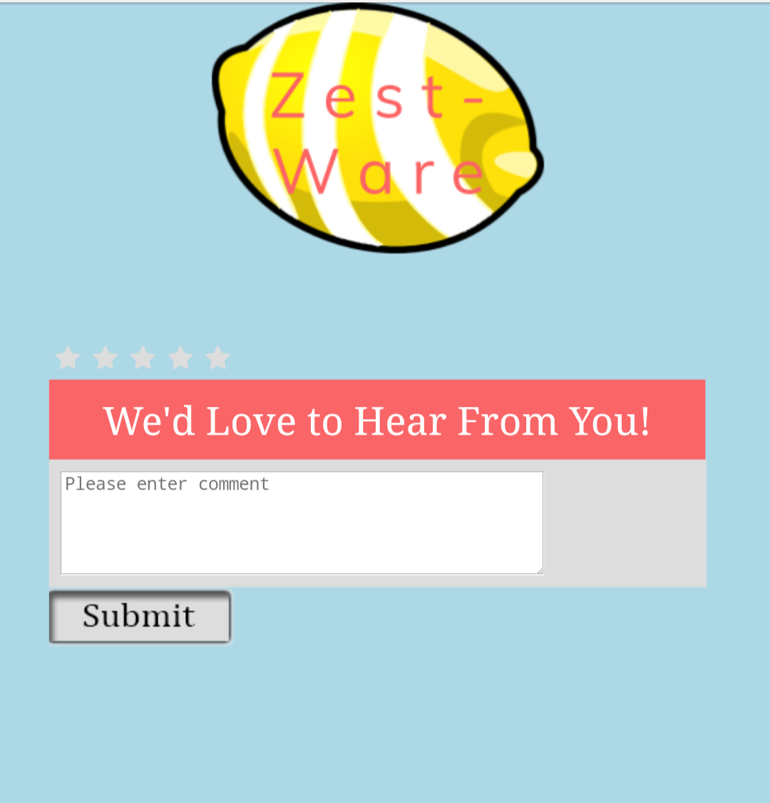
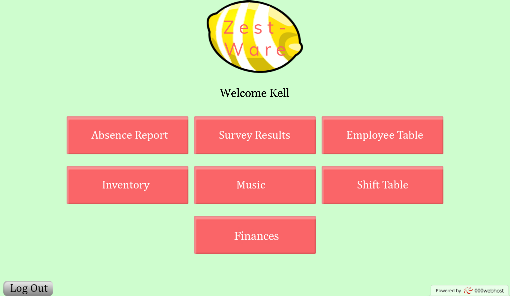
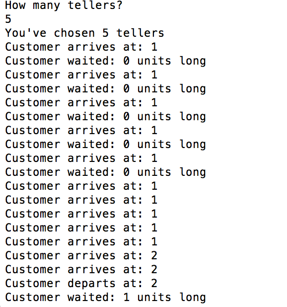
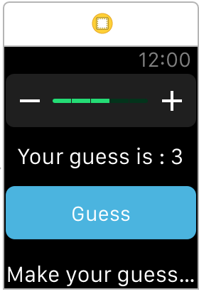

Skills

Brief introduction, my name is Raphaelle Marcial! Rutgers University is my second home, and I'm a fourth-year computer engineering major. Please feel free to look around, and contact me!
Ambitious and Curious. I believe those two qualities sum me up the best, and these qualities are necessary if you want to be a successful engineer. If you're still reading, I'm glad I still have your attention... Let's delve deeper into my reasoning, because you must be curious too. Ambitious: I am all in when it comes to achieving a feat that's just as groundbreaking as semiconductors. To be more specific, I want to develop chip designs that minimize power and allow more transistors per chip. These are two problems that the industry is not solving fast enough. My goal is to change that. Curious: When I learn about new technology, I immediately perform extensive research on it. I like to break down complicated systems into individual pieces, and learn how each component works. This allows me to appreciate the full system even more.
If you're still here, click here for my resume!
Zest-Ware: Restaurant Automation
This was my project from 14:332:452 - Software Engineering. My involvement in this project was creating an interface for managers and general employees of medium-sized restaurants that would facilitate daily responsibilities.
This is a mobile screenshot of a survey to be completed by a customer.

This is the manager portal, which is seen as soon as they log in.

Click here for my group's final report.
Click here for the code utilized in creating this!
Pthread and Signal Project In my course, 14:332:434 - Introduction to Computer Systems, I had a project that involved using signals as interprocess communication between parent and children processes.
Click here for the code utilized in creating this!
Bank Teller Simulation This was a project from 14:332:351 - Programming Methodology 2. It involved experimenting with different amount of bank tellers in order to create efficient service. Here is an example of the output shown in terminal.

Click here for the code utilized in creating this!
Snake Game This was my final project from 14:332:252 - Programming Methodology 1. Students were asked to complete segments of code resulting in a replica of the game "Snake". Clearly, I was very excited upon completing this (via Snapchat). Click here for the code utilized in creating this!
How Many Fingers? This is a screenshot of the first Apple Watch App I've created through Udemy. It was a guessing game where the user would input a number from 1 to 5 and see if the computer "thought" of the same number. Here is the code for How Many Fingers!

Learning how to code is a task which the majority of us do outside of an academic environment. Therefore, it wouldn't feel right continuing my journey without giving credit:
Rob Percival - I've been learning from him for a little more than a year, and owe most of my knowledge to him. I'm currently enrolled in his courses, "The Complete Web Developer Course" and "The Complete Apple Watch Developer Course" on Udemy. He actually inspired me to create a webpage for myself!
w3schools - This website is popular for a reason. Check them out, because they most likely have the solutions to any problem you have!
7Signature - A fellow developer runs this site. He defintely helped me with specific obstacles I had in creating this website!
Now, I'm going to acknowledge the places where I've found certain elements of my website. Click on each item for their original location.